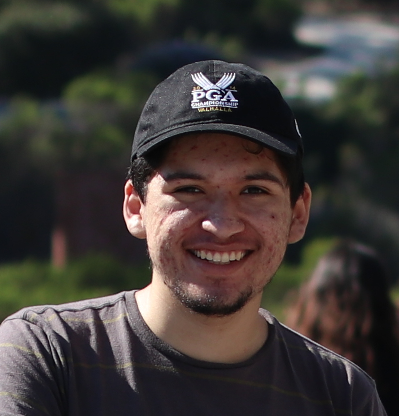

Jose Orozco

Objective:
I aim to obtain a thorough education about circuits and the fields that closely surround it, where I learn and consistently put into practice this knowledge for my development in this field.
Education:
UC, San Diego: Sep ‘17 - Present; fourth year Electrical Engineering undergraduate candidate with emphasis in circuits and systems.
Work related experience:
UCSD ATS: Oct ‘17 - Jan ‘18
IT Desk Help
Triton UAS (formerly UCSD AUVSI): Apr ‘18 - Jun ‘19 (Member), Jun ‘19 - Present
Embedded Co-lead
Artemis Student Challenge: Jun '20 - Present
Guidance, navigation, and control (GNC)/Simulation development
Relevant Studies:
Currently, in addition to the prerequisite courses that electrical engineering courses entail, i.e. math and physics, I have completed courses on active circuits, power electronics, analog and discrete systems, digital design, and IoT devices.
Skills:
- Proficient in C\C++ and SPICE
- Basic understanding of Verilog and Python
- Intermediate experience of MATLAB and Mathematica
- Linux power user
- Native Spanish speaker